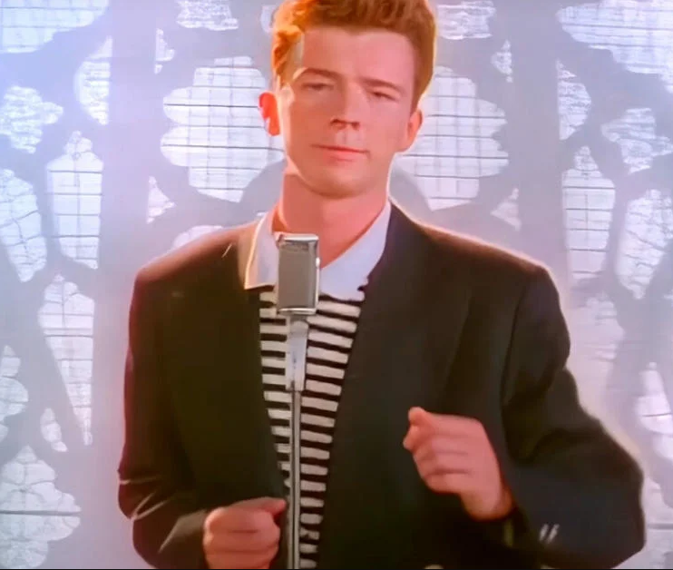

Hi, I'm Shubhanshu, a software engineering student and developer driven by a passion for building clean, impactful software. My curiosity for how technology works naturally led me into programming, and I am actively seeking opportunities to collaborate with forward-thinking teams, companies, and individuals on challenging technical projects. Beyond development, I have a strong creative side with experience across video editing, audio post-production, and digital media. In my downtime, I experiment with sound design and music production—an area where I am deeply passionate about expanding my creative horizons and exploring opportunities at the intersection of technology and the music industry. I thrive in fast-paced environments where I can continuously learn, refine my craft, and contribute across both technical and creative domains. Thank you for stopping by!

About Me

